Recent advances in generative modeling have substantially enhanced novel view synthesis, yet maintaining consistency across viewpoints remains challenging. Diffusion-based models rely on stochastic noise-to-data transitions, which obscure deterministic structures and yield inconsistent view predictions. We propose a Data-to-Data Flow Matching framework that learns deterministic transformations directly between paired views, enhancing view-consistent synthesis through explicit data coupling. To further enhance geometric coherence, we introduce Probability Density Geodesic Flow Matching (PDG-FM), which constrains flow trajectories using geodesic interpolants derived from probability density metrics of pretrained diffusion models. Such alignment with high-density regions of the data manifold promotes more realistic interpolants between samples. Empirically, our method surpasses diffusion-based NVS baselines, demonstrating improved structural coherence and smoother transitions across views. These results highlight the advantages of incorporating data-dependent geometric regularization into deterministic flow matching for consistent novel view generation.
State-of-the-art methods such as Zero-1-to-3 and Free3D use diffusion models that generate novel views by denoising from random Gaussian noise. This stochastic noise-to-data process obscures the deterministic geometric relationship between views, leading to inconsistent multi-view predictions and requiring many denoising steps (typically 50–100 NFE).
Flow matching offers a deterministic alternative, but standard formulations use linear interpolation between source and target images. Linear paths cut through low-density regions of the data manifold, producing blurry, unrealistic intermediate states—pixel-level cross-fading rather than meaningful geometric transitions.
We define a Riemannian metric where distance is inversely proportional to data density, so the shortest path (geodesic) naturally follows high-density regions of the data manifold. By training flow matching models on these geodesic interpolants instead of linear ones, our method produces sharper, more geometrically coherent view transitions.
Under the metric $\mathbf{G}(x) = p(x)^{-2}\,\mathbf{I}$, where $p(x)$ is the data density estimated by a pretrained diffusion model, geodesic paths stay in high-density regions of the data manifold. This turns the abstract notion of "staying on the manifold" into a concrete, trainable objective.
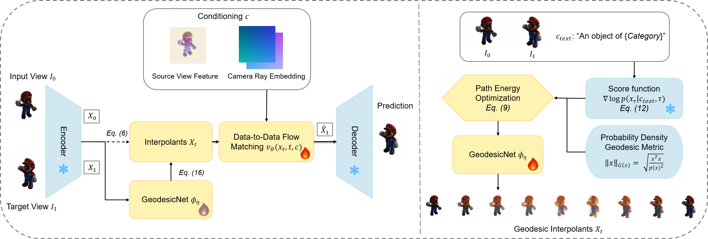
Figure 2. Overview of the Probability Density Geodesic Flow Matching (PDG-FM) framework. (Left) Data-to-data flow matching pipeline: the source view $I_0$ and target view $I_1$ are encoded, and GeodesicNet $\phi_\eta$ produces geodesic interpolants that replace linear ones. The flow matching network $v_\theta$, conditioned on source-view features and camera ray embeddings, learns to predict the target from these on-manifold interpolants. (Right) GeodesicNet training: a pretrained diffusion model's score function $\nabla \log p(x)$ serves as a density proxy to define the probability density geodesic metric. GeodesicNet is trained via path energy optimization to produce interpolants that minimize the Euler–Lagrange geodesic energy under this metric.
Instead of the conventional noise-to-data generation, we learn a deterministic mapping directly from a source view $x_0$ to a target view $x_1$. The flow model is conditioned on relative camera pose via Plücker ray embeddings and source-view features (CLIP + VAE). This preserves structural correspondence between paired views and eliminates stochastic sampling, enabling high-quality synthesis in as few as 10 function evaluations.
Standard flow matching uses linear interpolants: $x_t = (1-t)x_0 + t x_1$, which traverse straight lines through low-density (off-manifold) regions. We replace these with geodesic interpolants that add a learned correction:
$$x_t = (1-t)x_0 + t x_1 + \phi_\eta(x_0, x_1, t)$$
The correction network $\phi_\eta$ (GeodesicNet) learns to produce interpolation corrections that keep the path on the data manifold.
To find the shortest path on the data manifold, we minimize the Euler–Lagrange energy functional—the classical variational condition for geodesics. This energy depends on the data density $p(x)$, which we cannot compute directly. Instead, we use the score function $\nabla \log p(x)$ from a pretrained diffusion model as a tractable density proxy: the score defines the Riemannian metric that determines manifold geometry. This naturally sets up a teacher–student scheme: the pretrained diffusion model (teacher) provides score estimates that define the manifold curvature, and GeodesicNet (student) learns to correct interpolation paths so they minimize the geodesic energy under this geometry.
Training proceeds in two phases: (1) learn geodesic paths by training GeodesicNet to minimize the Euler–Lagrange geodesic energy using the teacher’s score estimates, and (2) train the flow matching model on the resulting geodesic interpolants.
Qualitative comparisons on the GSO dataset. Our D2D-FM produces sharper and more geometrically consistent novel views compared to Free3D and NaiveFM baselines.
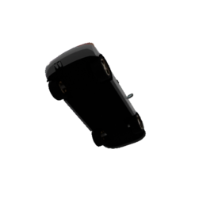
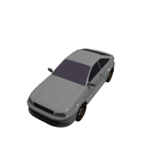
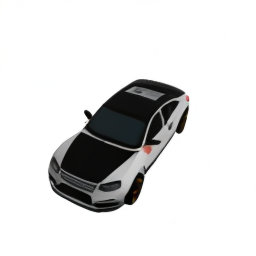
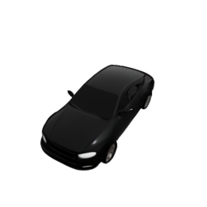
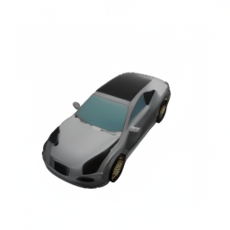
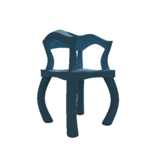
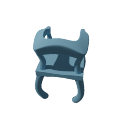
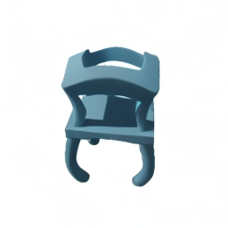
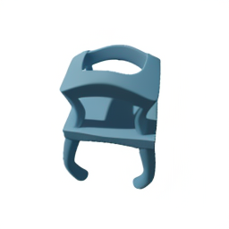
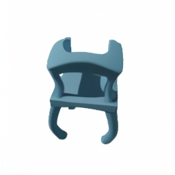
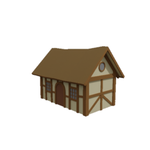
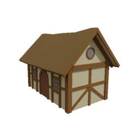
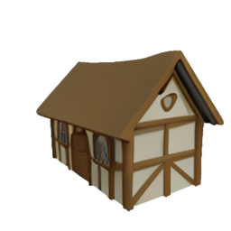
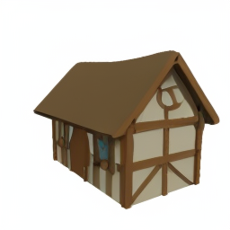
Multi-view novel view synthesis results on the GSO30 benchmark. Given a single input view, our method generates more consistent and accurate novel views compared to Free3D.
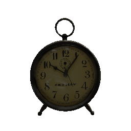
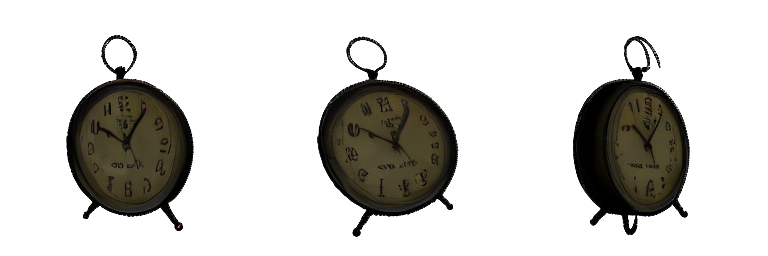
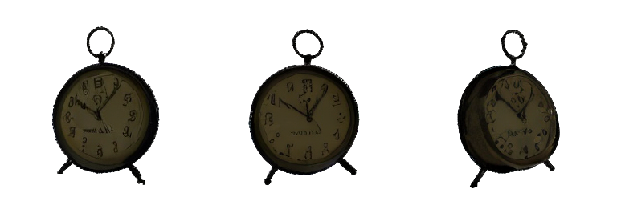
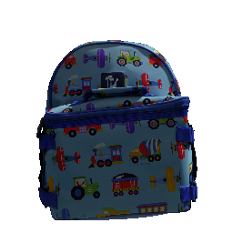
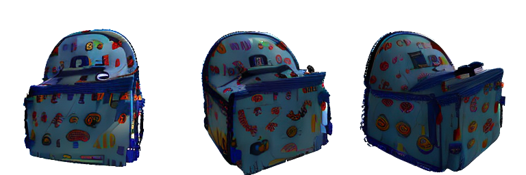
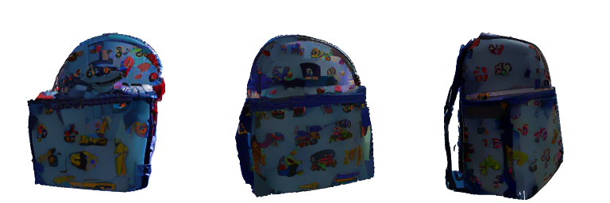
Comparison between linear and geodesic flow matching interpolants. Geodesic interpolants produce more realistic intermediate views by staying on the data manifold.
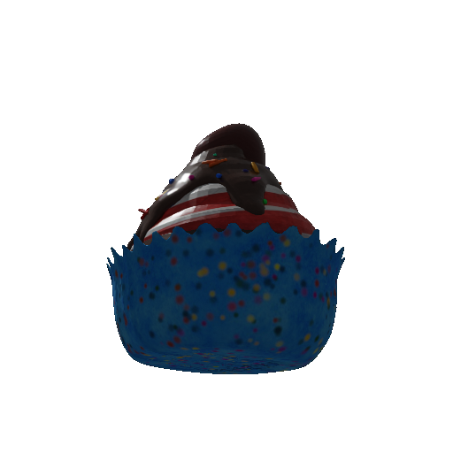
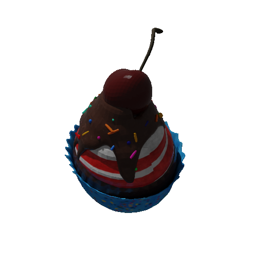
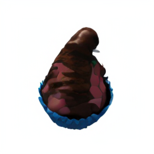
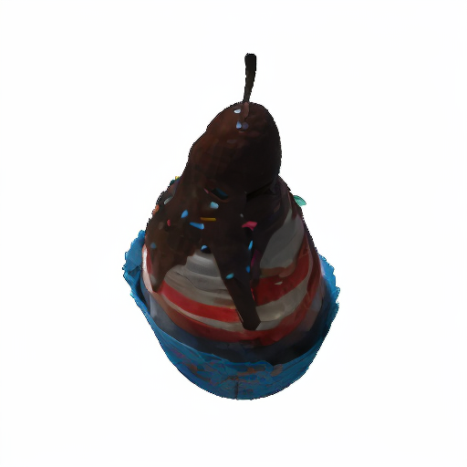
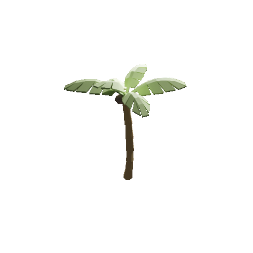
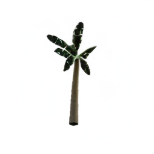
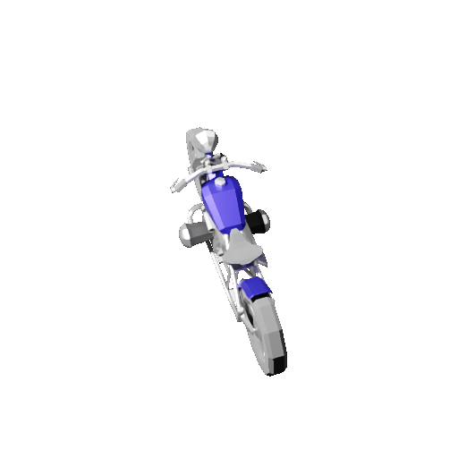
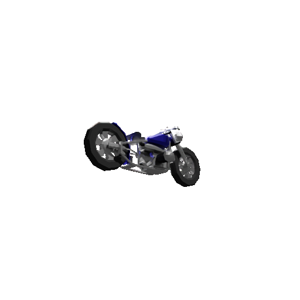
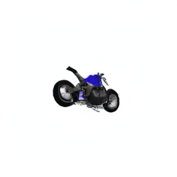
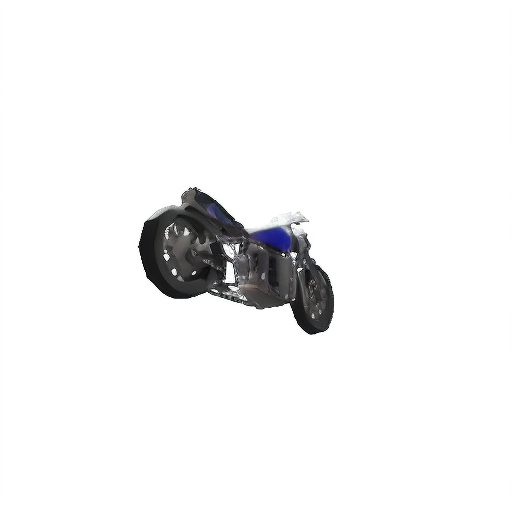
Visualization of interpolation paths between two views. Linear interpolation produces blurry, unrealistic intermediate images, while geodesic interpolation follows the data manifold, producing sharp and plausible transitions.
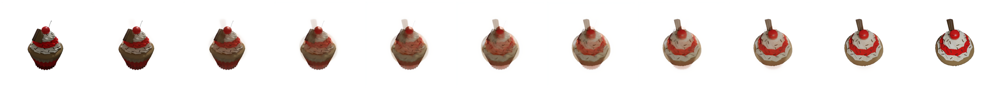
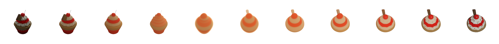
The Euler–Lagrange residual (functional derivative norm) decreases during geodesic optimization, confirming convergence to true geodesics on the probability density manifold.
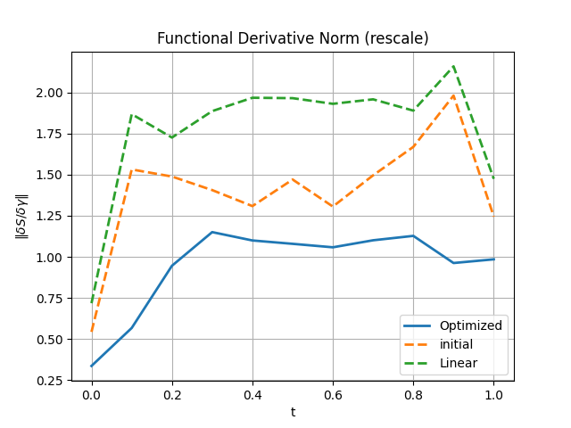
@inproceedings{wang2026geodesicnvs,
author = {Wang, Xuqin and Wu, Tao and Zhang, Yanfeng and Liu, Lu and Sun, Mingwei and Wang, Yongliang and Zeller, Niclas and Cremers, Daniel},
title = {GeodesicNVS: Probability Density Geodesic Flow Matching for Novel View Synthesis},
booktitle = {CVPR},
year = {2026},
}